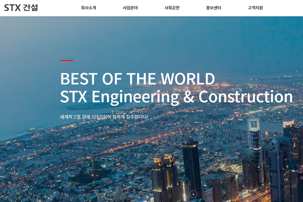
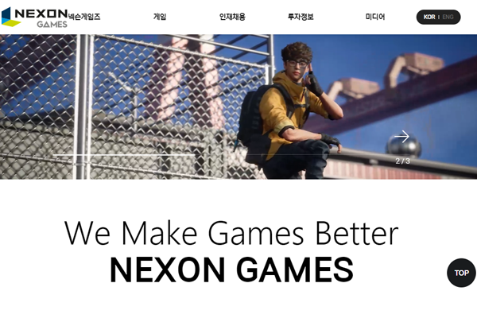

Moon Su Bin
배움의 자세를 잃지 않고 끊임없이 성장 하는 개발자가 되겠습니다.

About me
더 나은 결과물이 나올 수 있도록 끊임없이 고민하고 어려운 일이 있어도 포기하지 않고 해내겠습니다.
계속되는 도전 속에서 오는 위기와 어려움에 굴하지않고 한단계 더 발전하겠습니다.
새로운 것을 두려워하지 않고 끊임없이 공부하며 꾸준히 발전하는 개발자가 되겠습니다.
-
Birth 20 July 1997
-
E-mail anstnqls554@gmail.com
-
Location Daegu
-
MBTI ENFP
EDUCATION
2022 - 그린컴퓨터아트학원 '스마트혼합-Vue 활용 FE 개발자 양성과정' 수료
2020 - 대구보건대학교 스포츠재활과 졸업

Skill
-

HTML로 웹페이지의 구조를 잡을 수 있고 css와 함께 레이아웃을 잡을 수 있습니다.
-

HTML과 CSS를 사용해서 외관을 꾸미고 레이아웃을 잡을 수 있습니다.
-

Javascript를 활용해 컨텐츠를 동적으로 움직일 수 있습니다.
-
Jquery를 이용해 많은 클론코딩을 해보았습니다.
-

component로 재사용이 가능한 모듈을 뽑아내봤고 vuex를 사용해 상태관리를 해봤습니다.
-

웹페이지를 만들기 전 figma로 와이어프레임을 만들고 기본적인 레이아웃을 만들어 봤습니다.
Project
-
STX 건설 클론코딩
( , )초기에 HTML, CSS, JS, JQUERY의 학습을 위해 간략하게 제작을 해 본 사이트입니다. 일부 기능 및 css구성을 수정하여 기존사이트의 오류를 수정하는 작업을 진행하였습니다.
 -
거제청년센터 클론코딩
( , , )거제 청년 사이트는 관공서사이트로서 커뮤니티 기능과 함께 정보전달사이트로서 향후 관련컨텐츠 제작경험을 해보고자 클론코드를 진행하였습니다. 각 섹션별 주요내용구성 및 레이아웃 구조에 대해서 분석을 진행한 클론코드사이트입니다.
-
마시그래이 클론코딩
( , , )마시그래이 웹사이트는 대구지역 프랜차이즈 업체로서 프랜차이즈 모집을 위한 정보와 새로운 소식을 전달하는 과정에서 효율적인 구성에 대해서 분석을 진행해본 사이트이며 비효율적인 부분은 개선하여 적용한 클론코드 사이트입니다.

-

-
정육각 클론코딩
( , )육가공 제품을 온라인상에서 홍보 및 판매하는 사이트로서 기본적인 쇼핑몰 구성과 회사소개가 조화롭게 배치된 사이트로 판단하여 클론코드를 진행하였습니다.
-

-
GENESIS 클론코딩
()GENESIS는 제조업체 사이트로서 글로벌한 정보를 제공하는 사이트로서 다양한 전세계 고객을 위한 정보전달의 효율적 사이트 구조에대한 분석을 진행하고자 제작해 본 클론코드사이트입니다.

-
Life
-
Picture
-
Health
-
Picture
-
Picture
-

travel
-

travel
Vision
1년 후 배울의지가 가득한 개발자
1년 후 저는 신입개발자가 되어 회사의 코드가 어떻게 짜여져있는지 보고 배울것입니다. 그리고 어떻게 하면 더 괜찮은 코드가 나올지 끈임없이 생각하고 고민할 것 입니다. 또 React, Vue, Angular 중 회사에서 필요로 한 프레임워크를 꾸준히 공부하겠습니다.
5년 후 자신감이 있는 개발자
5년 후 저는 프로젝트에 들어갈 때 안된다는 생각보다 할 수 있다라고 생각을 가지고 프로젝트에 임하여 뛰어난 완성도를 가진 결과물을 내놓을것입니다.
10년 후 신뢰할 수 있는 개발자
10년 후 저는 프로젝트에서 믿고 맡길 수 있는 개발자가 될 것입니다. 풀스택개발자가 되기위해 백엔드에 관한 공부도 게을리 하지않겠습니다.